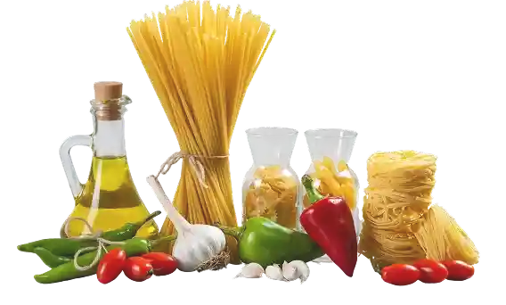

Nossa
História
Em 2019, numa cozinha simples em Petrópolis, na Região Serrana, Dona Carmela fazia massa fresca para os vizinhos toda sexta-feira. O cheiro de farinha e ovos caipiras invadia a rua e as pessoas já esperavam na calçada.
O que começou como uma tradição de família — receitas herdadas da nonna calabresa — virou um fenômeno na Cidade Imperial. Em poucos meses, os pedidos não cabiam mais na cozinha de casa.
...E foi assim que nasceu a La Bella — e a promessa de levar o sabor da Itália para a sua mesa em Petrópolis!

Da cozinha para o mundo
Em 2021, a La Bella ganhou seu primeiro espaço de produção. Trouxemos uma máquina de massa profissional da Itália — a mesma que a nonna sonhava em ter — e montamos uma equipe de artesãos apaixonados.
Cada um deles foi treinado à mão. Nada de atalhos industriais. Cada fio de fettuccine, cada recheio de ravioli, cada nhoque — tudo continua sendo feito com as mãos, como sempre foi.
Sem atalhos, sem conservantes
Selecionamos cada ovo, cada grão de trigo, cada tomate. Nossos fornecedores são pequenos produtores do interior — gente que trata a terra com o mesmo respeito que a gente trata a massa.
É por isso que o sabor é diferente. Não existe fórmula mágica: existe ingrediente bom e mão de quem sabe.

E hoje?
A La Bella entrega em toda Petrópolis e região serrana, abastecendo dezenas de restaurantes que confiam na nossa qualidade. Mas uma coisa não mudou: Dona Carmela ainda passa na produção toda sexta-feira, prova a massa e só libera quando o sabor está perfeito.
Porque para nós, cada pacote que sai daqui carrega a mesma promessa da primeira sexta-feira na cozinha de casa.
Provar agora